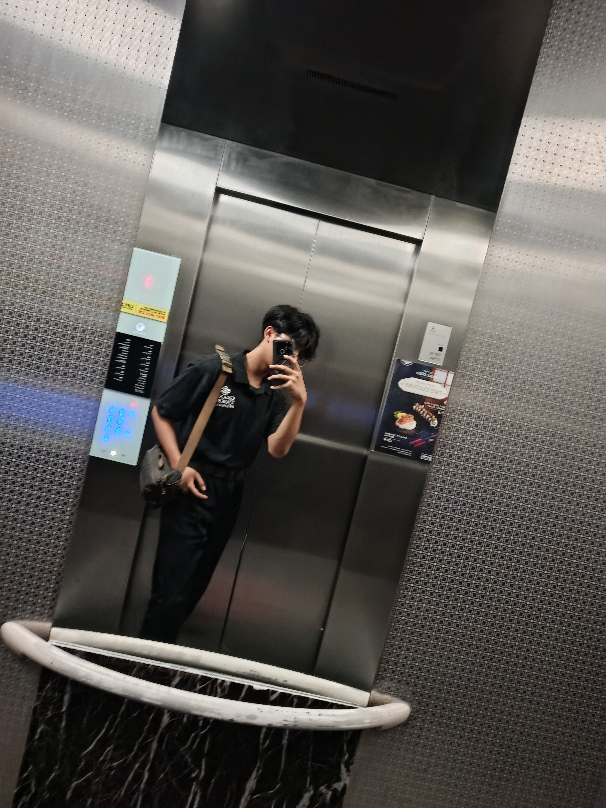

M. Sidik Aljabar
Lulusan Teknik Otomasi Industri yang adaptif, memadukan ketelitian logika sistem kontrol mekanis dengan kreativitas modern sebagai Content Editor dan pengembang aset media digital terstruktur.

Perjalanan saya diawali dari kedisiplinan ilmu Teknik Otomasi Industri di SMK Negeri 1 Cirebon. Pengalaman ini membentuk pola pikir saya menjadi sangat terstruktur, analitis, dan mengutamakan ketepatan saat memecahkan masalah operasional sistem kelistrikan maupun instrumentasi pabrik.
Ketertarikan kuat pada dunia digital mendorong saya mengekspansi kemampuan ke ranah rekayasa visual sebagai Content Editor serta pengembangan web dasar. Saya mahir mengintegrasikan alat penyuntingan multimedia modern seperti Canva dan CapCut demi menghasilkan produk komunikasi media yang kreatif, rapi, dan mampu menjawab kebutuhan pasar digital secara efektif.
Melakukan penyuntingan klip video digital, penataan alur aset gambar grafis, serta perencanaan konten menggunakan aplikasi CapCut dan Canva.
Analisis gambar diagram kabel kelistrikan (wiring diagrams), kalibrasi instrumen sirkuit kontrol, serta pengoperasian sistem monitoring digital DCS.
Penyusunan file laporan teknis operasional terintegrasi, korespondensi, dan kalkulasi data menggunakan ekosistem lengkap Microsoft Office.
SMK Negeri 1 Cirebon
Mengambil fokus spesialisasi pada Program Keahlian Teknik Otomasi Industri. Mempelajari logika kontrol kelistrikan, sistem pneumatik, PLC, serta pemrograman sirkuit kelistrikan industri terintegrasi.
Semarang PGU - Divisi Operasi & Pemeliharaan
Terlibat langsung dalam menganalisis ketepatan gambar wiring diagram sistem kontrol, melaksanakan kalibrasi instrumen sirkuit pengaman, serta mempelajari pemantauan unit pembangkit melalui kontrol layar sistem DCS (Distributed Control System).